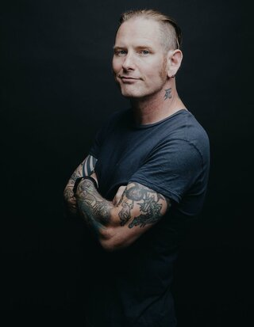

Corey Taylor
- Rock Star -
About Me
I'm an experienced vocalist, songwriter and guitarist.
Born in Des Moines, Iowa, but I've been living in Las Vegas for about 11 years now.
I'm currently fronting two quite globally successful bands that you may have heard of.
I've also got a solo project on the side and I've done multiple music collaborations with other artists and bands.
My voice is pretty extraordinary and powerful. I master clean vocals, screaming and rapping - like a pro!
People may think I've got an ugly face since I sometimes perform with a mask, but that's definetely not true.
Apart from my excellent skills in music, I do have some experience in acting,
producing movies and writing books.
I'm always up for new challenges and I work hard to achieve my goals.
Nothing can stop me - the world is my oyster!
On Stage
- Stone Sour: Alternative Metal/Rock. I am the front vocalist and founding member.
Been active in the band 1992-1997 and 2000-present.
I occasionally also play guitar and keyboard.
The band has released 6 studio albums and hits like "Through Glass" and "Absolute Zero"
- Slipknot:The band that took the world with storm.
Slipknot can't be put in a genre we are our own genre, but sometimes people call
us Nu Metal. I'm the lead vocalist and I've been in the band since 1997 and is still active. Our thing is that we all wear masks when we perform. The band has relased 6 studio albums and 26 singles. We've won 29 awards and been nominated for various ones 63 times.
- CMFT is my debut solo album that was relased 2020.
You wouldn't hear these songs on on a Stone Sour or Slipknot album, this goes under another genre. Another proof of how such an amazingly talented musician I am. I ace whatever I'm working on.
- I've done many guest appearances on albums with bands like Code Orange, Apocalyptica, Soulfly and Steel Panther
- I did a collaboration with Dave Grohl, Rick Nielson & Scott Reeder.
The result was the awesome single "From Can to Can't."
Selection of Awards
- Grammy Awards for Best Metal Performance (2006)
- Metal Hammer Golden God Awards for Best International band (2013)
- Revolver Golden Gods Awards for Best Vocalist (2013)
- Loudwire Music Awards for Rock Titan (2015)
- Kerrang! Awards for Legend (2018)
- Heavy Music Awards for Best International Band (2020)
- Loudwire Music Awards for Best Vocalist (2017)
Off Stage
- I've written a few books, like for example
Seven Deadly Sins: Settling the Argument Between Born Bad and Damaged Good (2010)
- I used to write a monthly column for the British publication called "Rock Sound" (2001-2016)
- Actor in Bad Candy(2021), Sharknado 4: The Fourth Awakens(2016) and upcoming move Rucker (2022), where I play the role Taco Tuesday
- I've been an assistant movie producer on several projects but one where I did it
on my own was In Search of Darkness (Documentary, 2019)
Personal Information
Contact Me:
- Name: Corey Todd Taylor
- D.O.B: December 8, 1973
- Heigth: 5' 8" (1.73 m)
666 Las Vegas strip
54321 USA
coreytaylor@example.com